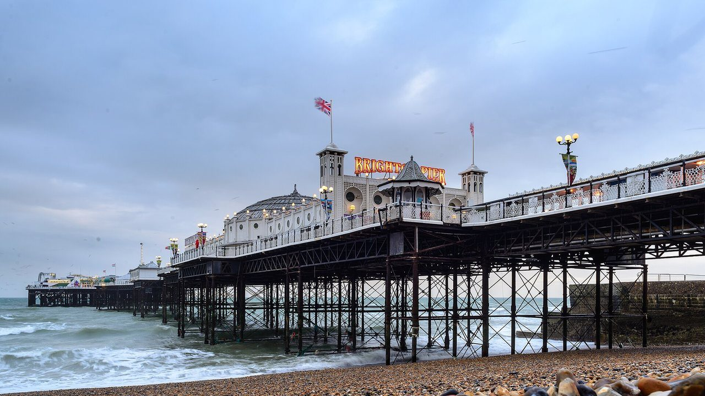

Race, Brighton Pride

Behind
Best +0:01
371W
Target 418 W-47 W
- Cadence
- 87rpm
- Heart
- 140bpm
- Speed
- 26.5km/h
Work2 of 13
1:33
Next: · 1:00 at level 19
+0.0%
0 m climbed
1.78 km
14
Resistance / 32
Solo races your best-time ghost: position reads Ahead or Behind, and solo alone gets a Pause button. Frozen at 4:27.